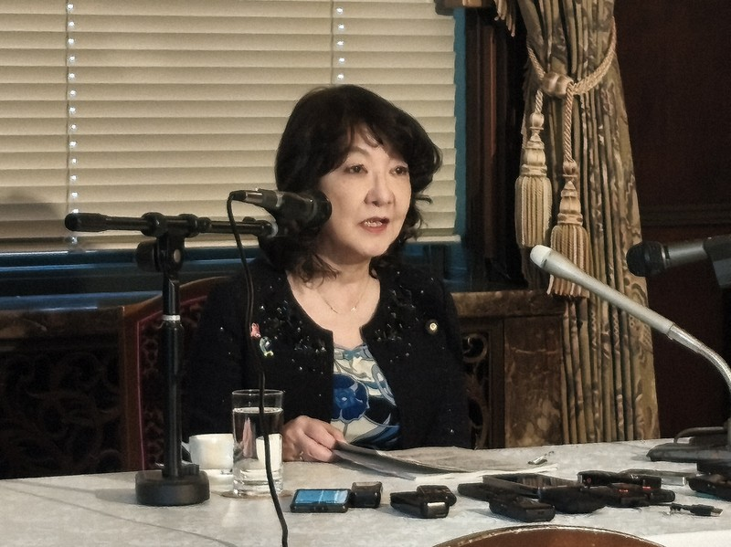
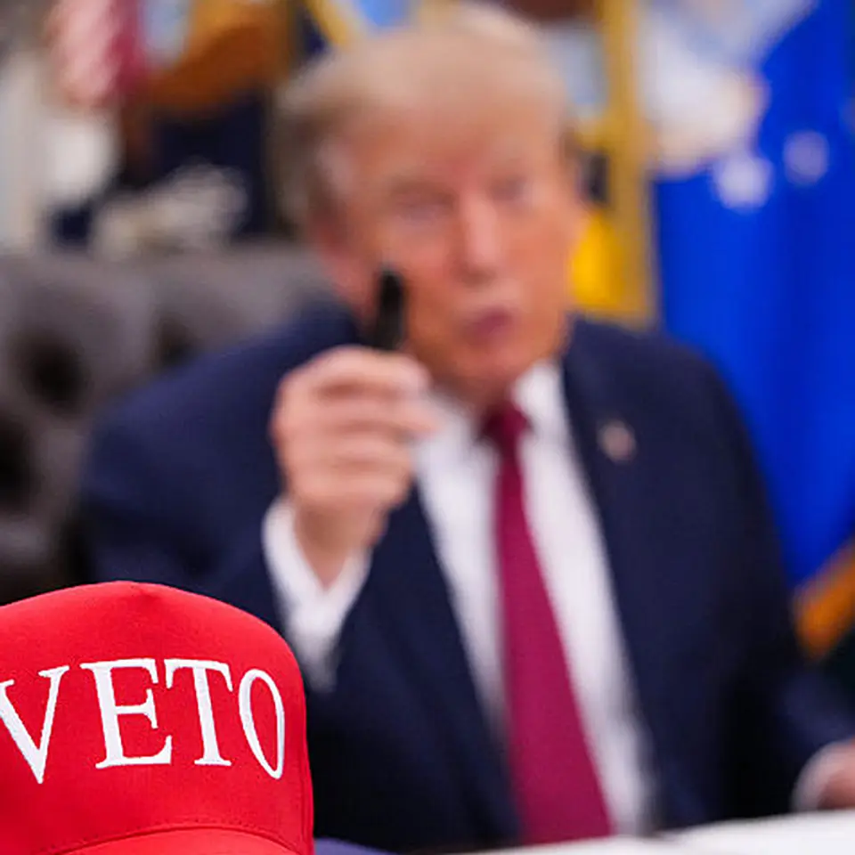

【29期連続増収】売上1兆円へ、サイバーの成長が止まらない
発行日時：2026-11-13 05:30:03 JST
NewsPicks原文を読む
あなたに関係ありそうな理由
29期連続増収を支える広告、ゲーム、IPの内訳と、ABEMAの黒字化やAI活用が具体的に分かります。売上成長と次期利益の減少予想を並べ、事業ごとの成長力や投資の重さを考える材料になります。
概要
NewsPicks編集部は、サイバーエージェントの2026年9月期決算を起点に、売上高1兆円が視野に入った成長の中身を解説する。売上高は9706億円で前年比11.1％増、営業利益は772億円で7.7％増となり、29期連続の増収を達成した。一方、2027年9月期の会社予想は売上高1兆700億円に対して営業利益660億円、前年比14.6％減で、増収がそのまま増益につながる計画ではない。
事業別の売上高は、メディア＆IPが2500億円で8％増、インターネット広告が4877億円で5.7％増、ゲームが2774億円で28％増だった。ゲームは売上の伸びが大きく、営業利益は600億円。開発費10億円以上の大型スマートフォンゲーム8本のうち7本が、月商10億円以上に達したという。ヒット作を作る力が成長を押し上げる一方、開発費を回収できる作品が続くかが収益の条件になる。
記事は、動画配信サービスABEMAについて、特別インセンティブを除けば初めて通期黒字になったと説明する。広告やゲームの単年の成績に加え、IPや配信サービスを育てる投資が収益化へ進んだことを示す数字だ。ただし、事業ごとの利益をすべて同じように安定したものと見ることはできない。広告市場やゲームのヒット、コンテンツへの支出によって、次の期の利益は動きうる。
AI活用も経営の柱として取り上げられる。広告制作ではAIを使うことで制作量が15倍になったと記事は伝え、会社は2028年までに開発プロセスを完全自動化する目標を掲げる。効率化は広告やゲーム開発の速度を高める可能性がある一方、生成AI広告への消費者の反応や、人の役割がどう変わるかは別に確かめる必要がある。記事は成長率だけでなく、事業の作り方そのものが変わる点を扱う。
表示コメントでは、29期連続の成長やABEMAの黒字化を評価する声と、広告のインハウス化、AI時代における専門職の価値を問う声が見られた。これは読者の見方であり、会社の実績や計画とは区別したい。売上高は1兆円に届く見通しでも、次期営業利益は減少予想である。どの事業が増収を支え、どの投資が利益を押し下げるのかを、決算の進捗とともに追う記事だ。
仕事や会話で使える一言
「売上を伸ばすだけでなく、次の期に利益がどう動くかも見たいですね。」
片山財務相「足元で急激な動き」 円下落、2カ月ぶり160円台
発行日時：2026-11-13 13:11:32 JST
NewsPicks原文を読む

あなたに関係ありそうな理由
円が160円台へ下落した背景に、米国のインフレ指標と利上げ観測がどう関わるかを確認できます。財務相の発言、介入警戒、企業や家計への影響を一緒に考える手がかりになります。
概要
毎日新聞の記事は、円相場が1ドル160円台まで下落した背景と、政府の対応を伝える。12日のニューヨーク市場で円は一時160円台となり、9月上旬以来およそ2カ月ぶりの円安水準を付けた。13日の東京市場でも160円台で推移し、為替介入への警戒から買い戻される場面はあったものの、円を売る圧力が続いた。水準だけではなく、日米の金利見通しが背景にある。
記事によると、10月の米消費者物価指数は前月比0.4％上昇し、市場予想の0.3％を上回った。変動の大きい項目を除いたコア指数も予想を超え、米国の物価が簡単には落ち着かない可能性を示した。ウォラーFRB理事は、状況によっては0.5ポイントの利上げもあり得ると発言。12月の利上げ観測に加え、2027年1月も連続して引き上げるとの見方が浮上し、ドルを支える材料になった。
片山さつき財務相は13日、円相場について「足元で急激な動き」と述べ、米財務省と連携しながら適切に対応する考えを示した。政府が為替介入を決定したという報道ではない。介入への警戒は短期的な円買い戻しにつながり得るが、米国の金利見通しが変わらなければ円売り圧力が残る可能性もある。記事は当局の発言と市場の動きを分けて伝えている。
円安が続けば、輸入価格や仕入れ費用、海外売上の円換算額などに影響するため、企業の計画や家計の負担にも関わる。為替介入は市場の急な動きを抑える手段として意識される一方、金利差や物価の見通しを直接変える政策ではない。記事に表示されたコメントでは、介入の限界や日銀政策との整合性、輸入物価への波及について異なる見方が示されていた。これらは読者の意見として読む必要がある。
このニュースで見るべきなのは、160円という節目だけではない。米国の物価指標が予想を上回り、FRBの利上げ観測が強まると、日米の金利差を意識した取引が円相場を動かす。日本側では財務相の発言や日銀の政策が注目されるが、当局の警告だけで相場の流れが変わるとは限らない。企業は為替前提をいつ見直すか、家計は輸入品やエネルギー価格への影響が続くかを確認したい。市場参加者が次の政策をどう織り込むかも相場を左右する。
仕事や会話で使える一言
「為替の水準だけでなく、金利差を動かす材料も追いたいですね。」
AIによる深刻な雇用混乱に備えを、格差拡大の可能性も＝バーFRB理事
発行日時：2026-11-13 13:17:13 JST
NewsPicks原文を読む
あなたに関係ありそうな理由
AIの雇用への影響を断定せず、労働分配率や若年層の兆候などのデータから論点を整理できます。どの仕事が変わるかだけでなく、AIによる生産性向上の利益が誰に届くかを考える材料です。
概要
Reutersによると、米連邦準備制度理事会（FRB）のバー理事は、人工知能の普及が短期に大きな雇用混乱を起こし、経済格差を広げる可能性に備えるよう呼びかけた。ただし、これは影響の規模を断定する予測ではないと本人は説明している。AIがすでに大量の雇用を奪ったと示す材料は限られる一方、技術の導入速度が速く、働き手の移行に時間がかかる場合に備える必要があるという問題提起だ。
バー理事が挙げた長期的な背景の一つが、労働分配率の低下である。第二次世界大戦後から今世紀初めまで、おおむね60〜65％で推移していた労働分配率は、2026年第2四半期に過去最低の52.8％となった。AIによって生産性が上がっても、賃金や雇用を通じて働く人へ利益が届くとは限らない。技術の普及で商品が安く広く利用されるのか、少数の企業に市場支配力が集中するのかで、利益の配分が変わり得る。
記事は、現在の雇用統計にはAIによる大きな代替がまだ少なく、需要や雇用が増えた分野もあると記す。一方で、若年層や経験の浅い労働者の仕事には、代替の兆しがあるという。AIが定型的な業務を担えば、企業は採用の入り口を狭めるかもしれない。若い人が実務を通じて技能を身につける機会をどう保つかは、雇用数だけでは見えにくい論点として浮かぶ。
さらに、AI企業はデータセンターや計算資源へ数兆ドル規模の投資を進めており、関連する計算資源の価格上昇も記事の論点だ。大規模な設備投資が続く一方、AIが少数企業に集中すれば、その投資が生む利益も偏る可能性がある。競争によって多くの企業や消費者がAIを使えるようになる場合とは、雇用や賃金への影響も異なる。バー理事の発言は、技術そのものだけでなく市場構造にも注目を促す。
表示コメントでは、米国の雇用増をAIによる代替の吸収と見る意見や、若年層への影響、政策の備えを議論する意見があった。コメントは読者の解釈で、Reuters本文の事実とは区別される。今後は雇用者数の総計だけでなく、職種、年齢、経験年数、賃金がどう動くかを見る必要がある。AIが生産性を高めるとき、働き手の移行を助ける教育や制度が追いつくかが記事の問いになっている。
仕事や会話で使える一言
「AIで仕事が減るかだけでなく、生産性の利益が誰に届くかも考えたいですね。」
【現実】トランプ大敗でも、イラン戦争が終わらない
発行日時：2026-11-13 05:30:01 JST
NewsPicks原文を読む

あなたに関係ありそうな理由
選挙での敗北や反戦世論があっても、米国の戦争を止める制度には高い壁があると分かります。議会、予算、戦争権限法の仕組みを、今後の政策判断を読む視点として得られます。
概要
NewsPicks編集部が紹介するThe Economistの記事は、中間選挙で共和党が大敗しても、イラン戦争がすぐに終わるとは限らない理由を米国の制度から説明する。出口調査では、投票者の7割超がイラン戦争を重要な判断材料に挙げた。それでも、世論や選挙結果が大統領の軍事行動を直ちに止めるわけではない。議会が持つ権限と、実際にそれを使う政治的条件の間には隔たりがある。
記事によれば、ヘグセス戦争長官への弾劾決議は下院で7票差で否決され、共和党から賛成に回ったのはマッシー議員1人だった。2027年1月に民主党が下院の多数を得ても、上院で有罪とするには3分の2の賛成が必要になる。選挙で下院の構成が変わることと、閣僚を罷免したり戦争を止めたりすることは同じではない。制度上の手続きと議席数が政策の行方を左右する。
戦争権限法は、大統領の軍事行動を議会が制限するための枠組みとして1973年に成立した。しかし、議会の決議や司法判断だけで軍事作戦を終わらせるのは難しいと記事は分析する。議会が実際に使える強い手段の一つは予算を止めることだが、戦闘中に資金を遮断すれば兵士や作戦への影響が生じる。議員にとっては、反戦を求める世論に応えることと、軍の運用を損なわないことを同時に考える必要がある。
元予算責任者の試算では、継続予算のもとで国防総省は1日あたり4億ドルの不足となり、トランプ大統領の予算案と比べれば不足は1日17億ドルに上る。予算の扱いが作戦に及ぼす規模を示す数字だ。過去のイラク戦争でも、議会が予算を通じて撤退を促そうとしたが、交渉は容易ではなかった。記事は今回の戦争を、軍事行動の開始だけでなく、終結を決める制度と政治の問題として捉える。
表示コメントには、戦争終結を何と定義するか、米国がどのように撤退するかを問う声や、反戦世論が政策に反映されるまでの時間を議論する声があった。これは読者の意見で、記事の分析と区別したい。今後は下院の多数派が変わる時期、議会が予算権限を使うか、イランとの交渉がどう進むかが注目点になる。選挙で示された民意が、制度を通じて実際の軍事政策を変えるかを追う記事だ。制度が政策を変えるまでの過程も追いたい。
仕事や会話で使える一言
「選挙結果の変化が、制度上いつ政策に届くかを見たいですね。」
三井住友ＦＧ、今期純利益を上方修正し達成に自信 今後中計見直しも
発行日時：2026-11-13 14:00:45 JST
NewsPicks原文を読む
あなたに関係ありそうな理由
金利上昇が銀行収益に与える効果と、デジタル金融サービスや預金獲得の成果を数値で確認できます。金利環境の追い風とデータセンター投資のリスクを並べ、銀行の次の成長条件を考えられます。
概要
Reutersは、三井住友フィナンシャルグループ（SMFG）が2027年3月期の連結純利益予想を1兆7000億円から1兆9000億円へ引き上げたと報じた。前年比20％増となる計画で、中島達社長は目標を達成できる可能性が相当高いとの認識を示した。上期の純利益は初めて1兆円を超える1兆31億円。年間配当予想も90円から100円へ増額し、業績の改善を株主還元へ反映する。
上方修正額の半分ほどは金利上昇などの環境要因で、残る1000億円は本業の好調によるものだと中島社長は説明した。金利の上昇は貸出金利や運用収益を押し上げる一方、預金金利など調達コストにも影響する。記事は日本銀行の政策金利が1.75％まで上昇するとの市場観測を紹介し、0.25ポイントの利上げがあれば翌年度に約1100億円の収益増につながるという試算にも触れている。
預金獲得では、国内残高が2026年3月末から1.4兆円増えた。個人向けのOliveや、中小企業・新設法人向けのTrunkなどのデジタル総合金融サービスが成果を上げたという。銀行にとって預金は、融資や投資を支える資金源である。金利上昇で預金獲得競争が強まる中、便利なサービスを通じて顧客との接点を保てるかが重要になる。記事は調達構造を示すNSFRの改善にも言及する。
SMFGは、好調な業績を受けて2027年5月に中期経営計画を見直す可能性を示した。ただし、利益のすべてが金利上昇だけで続くわけではない。社長は、データセンター投資が想定以上に減速すれば世界経済に影響するリスクを挙げた。投資が一時的に過熱している場合、減速そのものが必ずしも悪いとは限らないとの見方も示している。融資先の成長と大規模投資への資金供給をどう評価するかが課題になる。
表示コメントでは、利上げの寄与、本業の好調、期初予想の置き方、預金金利をめぐる銀行間の違いが議論された。コメントは読者の見解であり、決算の発表や社長の説明とは分けて読む。今期の上方修正は、金利環境と顧客部門の収益が重なった結果だ。次は、預金を安定して確保できるか、金利上昇の利益が調達費用を上回るか、そして中計見直しでどの領域へ資金を配分するかを見たい。
仕事や会話で使える一言
「金利の追い風と、本業で積み上げた利益を分けて見たいですね。」